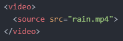

오늘의 첫 번째 목표는 웹 페이지에 동영상을 삽입하는 것입니다.
우선, 아무 동영상이나 준비해 주세요.
저는 pexels라는 무료 동영상 사이트에서 영상을 다운로드했습니다.
참고로, 웹 브라우저마다 지원하는 확장자가 다르기 때문에 자신이 사용하고 있는 브라우저에 맞는 확장자로 준비해 주세요.
저는 크롬을 사용하고 있어서 확장자가 mp4인 동영상을 준비했습니다.
영상을 삽입하기 위해선 'video' 태그와 'source' 태그, 그리고 'src' 속성을 사용합니다.
아래와 같이 코드를 작성합니다.

오.. 크기가 너무 크네요.
동영상도 이미지처럼 'width' 또는 'height' 속성으로 크기를 조정할 수 있어요.
여기서 '또는'이라는 단어를 사용한 이유는 동영상은 가로-세로 크기를 마음대로 조정할 수 없기 때문입니다.
그러니까 두 태그 중 하나만 사용해도 됩니다.
저는 'width' 속성으로 크기를 조정해보겠습니다.
참고로 'source' 태그가 아닌 'video' 태그 내에 적용시켜줘야 합니다.
음.. 분명 동영상을 삽입했는데 마치 이미지처럼 재생 버튼도 없고 재생조차 되지 않습니다.
이때 필요한 속성이 바로 'controls' 속성입니다.
이 속성도 'video' 태그에 적용시키면 됩니다.
코드는 아래와 같습니다.
두 번째 목표는 'input' 태그의 'type' 속성에 대해 더 알아보는 것입니다.
지금까지는 입력 타입으로 'text', 'password', 'submit'만 배웠는데 이들 외에 더 많은 타입들을 알아보려고 합니다.
'color', 'date', 'email', 'month', 'number', 'range', 'search', 'tel', 'time', 'url', 'week' 등이 오늘 알아보려는 타입들입니다.
그럼 바로 시작해보겠습니다.
'form' 태그도 복습할 겸 같이 사용하겠습니다.
하나씩 눌러가며 해당 타입이 어떻게 출력되는지 확인해보시길 바랍니다.
'color' 타입
'color' 타입은 색상을 선택할 수 있도록 해줍니다.
'date' 타입
'date' 타입은 날짜를 선택할 수 있도록 해줍니다.
'email' 타입
'email' 타입은 겉보기에는 'text' 타입과 다를 것이 없지만, 이메일 양식이 아닌 상태로 입력하면 오류 메시지가 나옵니다.
'month' 타입
'month' 타입은 월(月)을 선택할 수 있도록 해줍니다.
'number' 타입
'number' 타입은 숫자 외 다른 문자는 입력할 수 없도록 합니다.
알파벳 e는 입력이 가능한데, 이는 e가 상수(e=2.71828182846...)를 나타내기 때문입니다.
위아래 화살표를 누르면 숫자가 ±1 되는 것을 알 수 있습니다.
추가로 'min', 'max' 속성을 적용하면 입력할 수 있는 숫자의 범위를 지정해 줄 수도 있습니다.
아래는 'min="10"', 'max="20"'을 적용한 결과입니다.
해당 범위에 맞지 않는 숫자를 입력하면 오류 메시지가 나오게 됩니다.
'range' 타입
'range' 타입은 마우스로 원을 옮겨가며 숫자를 정하도록 합니다.
'min', 'max' 속성으로 범위를 지정해 줄 수 있는데, 지정하지 않으면 자동으로 0~100의 범위를 지정합니다.
실제로 원을 가장 왼쪽에 두고 '선택 완료'를 누르면 주소창에 'rangev=0'이,
원을 가장 오른쪽에 두고 '선택 완료'를 누르면 주소창에 'rangev=100'이 출력되는 것을 알 수 있습니다.
'search' 타입
'serch' 타입은 겉보기에는 'text' 타입과 다를 것이 없습니다.
이는 무언가를 검색할 때 사용하는 타입으로, 컴퓨터에게 '정보 검색'을 위한 입력 상자임을 각인시키는 거라 생각하면 됩니다.
'tel' 타입
'tel' 타입은 'text' 타입과 기능이 같습니다.
다만, 숫자를 더 간편하게 입력할 수 있도록 해줍니다.
PC는 키보드가 하나로 고정되어 있기 때문에 차이점을 느낄 수 없겠지만,
스마트폰이나 태블릿 PC 등의 경우 'qwerty' 키보드, '천지인' 키보드 등의 몇 가지 키보드를 가지고 있습니다.
해당 기기로 'tel' 타입이 적용된 페이지에서 숫자를 입력하려고 할 때, 숫자만 입력할 수 있는 키보드로 자동 조정됩니다.
'time' 타입
'time' 타입은 시간을 입력할 수 있도록 해줍니다.
'url' 타입
'url' 타입은 URL을 입력할 수 있도록 해줍니다.
만약, URL이 아닌 다른 양식으로 입력했다면 오류 메시지가 나오게 됩니다.
그리고 스마트폰이나 태블릿 PC와 같은 모바일 기기로 해당 타입이 적용된 페이지에서 URL을 입력할 때,
URL을 보다 편히 입력할 수 있도록 맞춤형 키보드로 자동 조정됩니다.